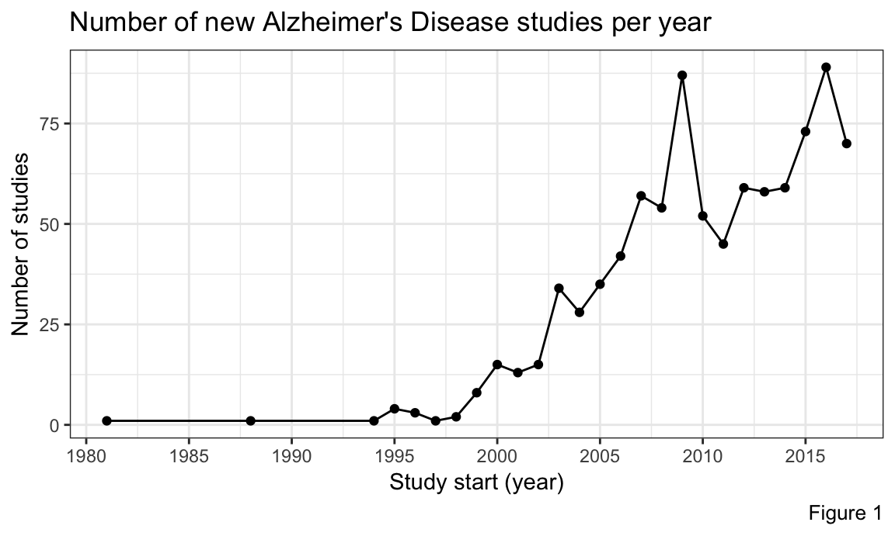
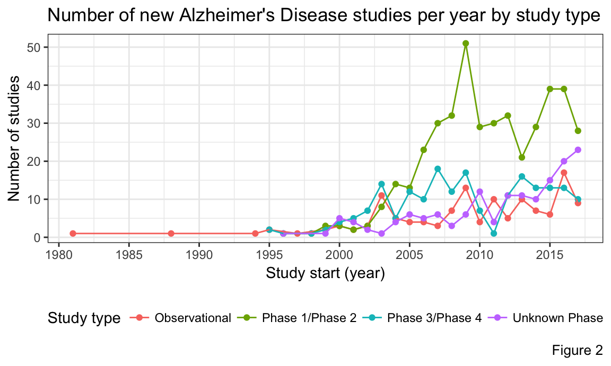

Alzheimer’s Disease (AD) is a progressive disease that destroys memory and other important mental functions. It is the 6th leading cause of death in the US, and it does not have a cure. The latter fact strongly affects a family of a newly diagnosed with AD patient. Exploring the landscape of ongoing clinical trials, targeting AD, is the next step family takes to assess possible treatment options. clinicaltrials.gov is a database of clinical studies conducted around the world and is a great place to start exploring experimental treatment possibilities. It has user friendly interface and provides extensive amount of clinical trials information. However, it could be overwhelming for someone without special training to dive through tabulated extensive information available at clinicaltrials.gov. A web-based visualization tool, which summaries Alzheimer`s Disease clinal trial information while sourcing data from clinicaltrials.gov, could be a useful tool for those families, impacted by the illness and seeking a quick visual reference guide on AD clinical trials past and present research.
The data were obtained by downloading all results associated with a search for “alzheimer” on the website clinicaltrials.gov. Data were accessed on 11/09/2017. All studies associated with the search term were included regardless of whether the study had previously completed, terminated, or other enrollment status factors. The data used in analyses are available in the Data file on the github page and the primary datafile used in analysis is called SearchResultsTable.csv.
Additional variables of interest were obtained by downloading all the data from each webpage associated with all studys returned in the original “alzheimer” search. These data were also accessed on 11/09/2017. Source code for extracting these variables are available in the file Extracting_data_across_all_xml_files.Rmd also on the github page. An additional dataset called alzheimers_data containing all variables associated with each study identified during the “alzheimer” search.
The datasets SearchResultsTable.csv and alzheimers_data contain largely overlapping variables. The dataset SearchResultsTable.csv is generally more processed, particularly for natural language variables. However, alzheimers_data contains several variables not available in SearchResultsTable.csv that an interested future researcher may access.
The primary datafile (SearchResultsTable.csv) contained informaton on 1,771 Alzheimer’s disease studies registered with ClinicalTrials.gov. We restricted our analysis on the 928 studies with study sites in the United States, and as of the November 9, 2017 data pull, the earliest clinical trial on Alzheimer’s Disease started on April 01, 1998 and the most recent on September 01, 2017.
We categorized the trials into 5 main categories based on study type and phase:
Observational: if a study is of study type observational (n = 133)
Phase 1/2: if a study is interventional, and phase is classifed as early Phase 1, Phase 1, or combined Phase 1/Phase 2 (n = 436)
Phase 3/4: if a study is interventional, and phase is classified as Phase 3, Phase 4, or combined Phase 3/Phase 4 (n = 204)
Unknown Phase: if a study is interventional, and phase was not specified (n = 155)
Below we present some summary characteristcs of the data with respect to trends in the number of study sites, the number of study funders, and the number of interventions across studies.
| Table 1. Descriptive statistics by study type | ||||
| Study Type | ||||
|---|---|---|---|---|
| Observational | Phase 1/Phase 2 | Phase 3/Phase 4 | Unknown Phase | |
| No. Study Sites | ||||
| Mean | 7.0 | 10.7 | 55.6 | 4.1 |
| Std. dev. | 19.8 | 20.2 | 73.6 | 21.2 |
| Median | 1.0 | 1.0 | 24.0 | 1.0 |
| Min. | 1.0 | 1.0 | 1.0 | 1.0 |
| Max. | 145.0 | 142.0 | 348.0 | 249.0 |
| No. Funders | ||||
| Mean | 1.4 | 1.2 | 1.3 | 1.4 |
| Std. dev. | 0.5 | 0.4 | 0.5 | 0.5 |
| Median | 1.0 | 1.0 | 1.0 | 1.0 |
| Min. | 1.0 | 1.0 | 1.0 | 1.0 |
| Max. | 3.0 | 3.0 | 3.0 | 3.0 |
| No. Interventions | ||||
| Mean | 1.6 | 1.9 | 1.8 | 1.9 |
| Std. dev. | 1.0 | 1.0 | 0.9 | 1.1 |
| Median | 1.0 | 2.0 | 2.0 | 2.0 |
| Min. | 1.0 | 1.0 | 1.0 | 1.0 |
| Max. | 6.0 | 6.0 | 6.0 | 8.0 |
We also examined the number of new studies each year. Figure 1 shows that there were peaks in the number of new studies in 2009 and 2016. If we look closely in Figure 2, we can see that the spike in 2009 is due to the large increase in Phase 1 and/or Phase 2 studies, which is indicative of a large number of new treatments being investigated. This happened because major pharmaceutical efforts were concentrated around finding a cure for Alzheimer`s Disease with promising drug candidates in pipeline. The spike in 2016, however, appears to be due to the combination of increased unclassified (in terms of study phase) trials, and a relatively high number of Phase 1/2 trials.

In the exploratory data interface, we present three interactive plots that will allow the user to subset and explore the data. We offer an interactive Gantt chart that allows the user to visualize trends in study length and interactive line plots were created the help the user visualize trends in age ranges of targeted participants.
Finally, we provide an interactive map that allows users to get a sense for how study locations are distributed across the US.
The Shiny dashboard created in this project creates a simple and user-friendly format for interested parties including physician and researchers with less statistical and the data savy patient to explore trends in Alzheimer`s-related clinical trials. We encourage the user to explore these interactive plots and also to download the source data from our github page and continue deriving insights into trends in Alzheimber’s studies!
Below we provide the full dataset used for this project, so that users can further examine the data associated with paraticular studies without having to download the full dataset from github.
Possible future directions for this project include updating the Shiny dashboard so that it interacts in real time with the clinicaltrials.gov website. This would allow the data in the dashboard to continue to provide the most up to date information to the user, and would prevent the dashboard from becoming obsolete over time.
Other possible future directions include incorporating additional variables so that the user can gain a more complete picture of the avialable data. Another area of possible expansion might include developing a platform for the user to perform simple statistical tests on the data from within the project website.